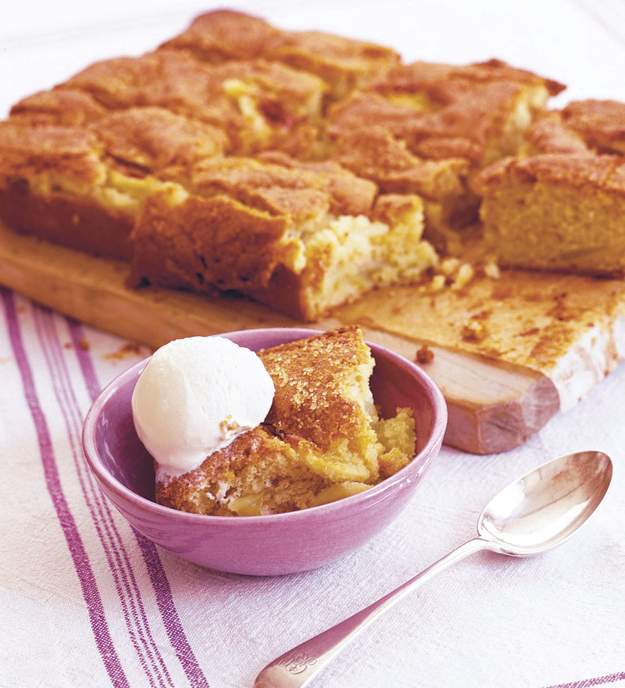

Apple Cake Recipe

Ingredients
- 5 apples, peeled and cored
- 3 eggs
- 1 ½ cups white sugar
- ¾ cup vegetable oil
- 1 teaspoon baking soda
- 1 teaspoon ground cinnamon
- 1 tablespoon vanilla extract
- 2 cups all-purpose flour
- ¾ cup chopped walnuts
Instructions
- reheat the oven to 350 degrees F (175 degrees C). Grease and flour a 9x13-inch pan. Cut the apples into 1-inch wedges; set aside.
- In a large bowl, whisk eggs and sugar together until blended. Mix in baking soda, oil, cinnamon, and vanilla. Stir in flour until just incorporated. Fold in apples and walnuts. Pour batter into the prepared pan.
- Bake in the preheated oven for 55 minutes, or until a toothpick inserted into the center of the cake comes out clean. Allow to cool slightly; this cake is best served warm or at room temperature.